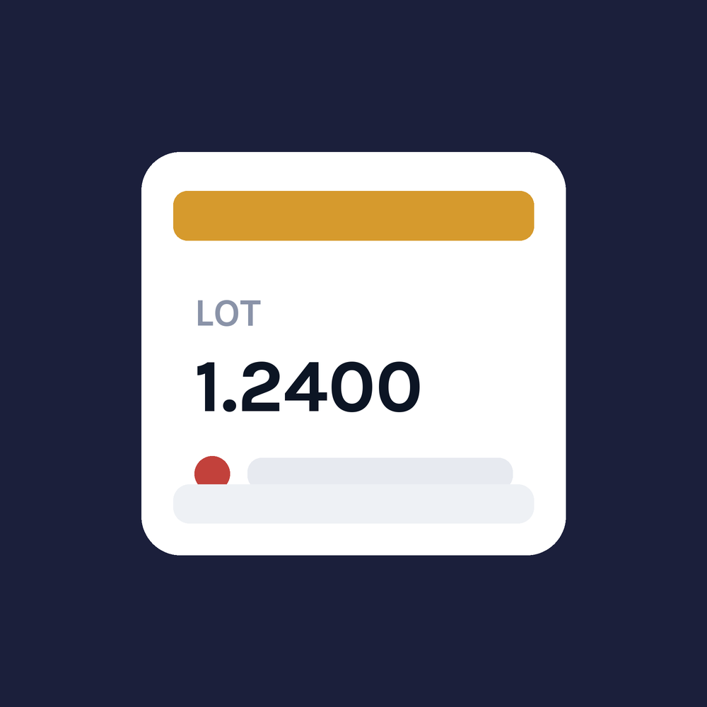
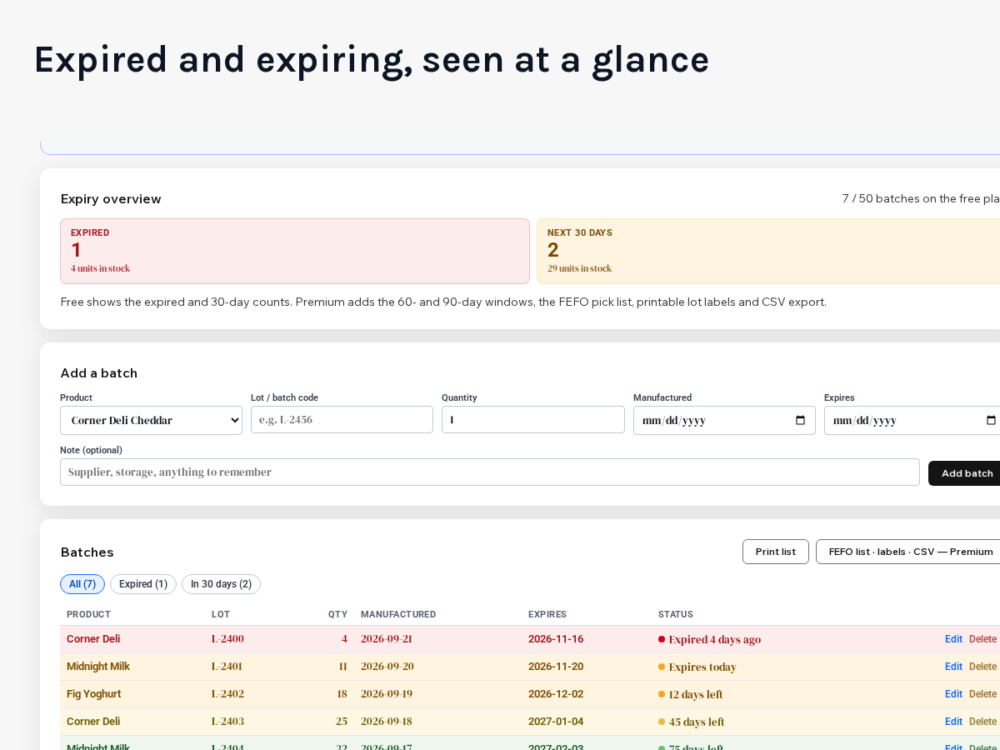

Lot Expiry: Batch Tracker
Lot codes and expiry dates for every product
- Lot code, made and expiry dates per batch
- See what is expired and expiring in 30 days
- A FEFO pick list to sell the oldest first
- Free covers 50 batches with the full list

What it does
Some stock has a date on it: food, drinks, cosmetics, medicine, anything that is made in batches. Your product list knows how many are in stock, but not when each batch runs out, so the expired box is found at the back of the shelf.
This app adds batches to your product list. Every batch is one lot code with a quantity, a made date and an expiry date. Free covers 50 batches: record them, edit them, and see at a glance how many have expired and how many run out within 30 days.
Premium opens the full picture: every batch grouped into expired, 30, 60 and 90 days, and later, in colours you can read across the room. It also gives you the jobs you actually do:
- A FEFO pick list, oldest expiry first, with a box to tick off each batch and a quantity to pick. - Printable lot labels: product, lot code and expiry, several per batch, ready to stick on boxes and shelves. - A CSV download of every batch, for your own spreadsheet.
Every sheet prints straight from the browser, with your shop name at the top.
Batches are stored with the app, so they never touch your product data and nothing is sent anywhere else. Premium is $6 per month, or $5 per month billed yearly.
Price
Free
Premium
$6/month, or $5/month billed yearly ($60/year). Unlimited batches, 30/60/90 windows, FEFO pick list, lot labels, CSV export